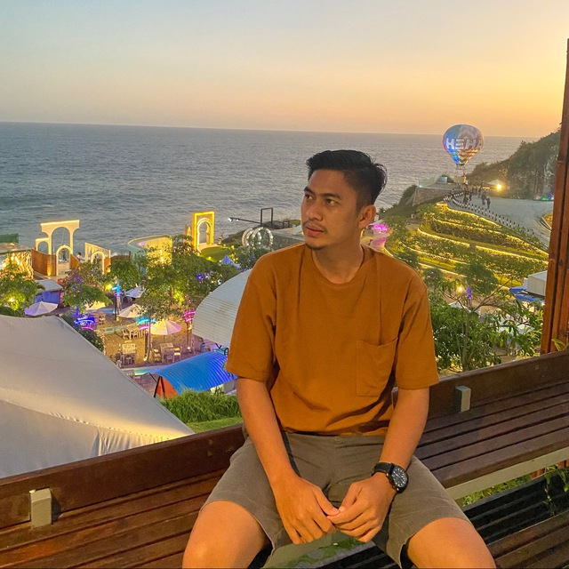

Biaya Pemeliharaan & Dukungan (Maintenance):
Mencakup pembaruan regulasi Kemenkes & BPJS terbaru, server backup berkala, fix bug, dan technical support 24/7.
Rp 7.000.000,- / bulan
Sistem Informasi Manajemen Rumah Sakit yang andal, aman, berstandar Kemenkes RI (Satu Sehat), BPJS Health Bridging, dan siap mendukung akreditasi faskes Anda tanpa biaya tersembunyi.
Arsitektur terintegrasi yang menjawab seluruh kebutuhan klinis, operasional, akuntansi, dan regulasi pemerintah dalam satu platform tunggal.
Sesuai Permenkes 24/2022. Dilengkapi format SOAP/CPPT terpadu, lembar status lokalis anatomis, odontogram interaktif, dan tanda tangan digital (TTE).
Bridging resmi Kemenkes RI (HL7 FHIR R4) dan BPJS Kesehatan (VClaim, Antrol V2 MJKN, Aplicares, iCare, dan HFIS) tanpa plugin eksternal berbayar.
Kontrol stok obat & BHP medis real-time dengan metode FIFO/FEFO, sistem peringatan kadaluarsa dini, transfer antar depo, dan E-Resep otomatis.
Transparansi penuh performa rumah sakit bagi C-Level. Visualisasi real-time cashflow, billing rawat inap/jalan, piutang BPJS, dan perhitungan jasa medis dokter.
Uji coba langsung beberapa fitur unggulan kami secara interaktif di bawah ini, mulai dari odontogram gigi, panggil antrean suara, hingga struktur interoperabilitas Satu Sehat.
Dilengkapi anatomi status lokalis dengan kanvas interaktif, odontogram dental charting standar internasional, format pengkajian nyeri anak/dewasa, dan sertifikasi TTE BSrE untuk validitas rekam medis digital tanpa kertas.
Tandai lokasi trauma/lesi langsung pada diagram tubuh digital.
Pencatatan kondisi tiap elemen gigi 11-48 secara interaktif.
Skrining nyeri otomatis dengan rekomendasi intervensi obat.
Tanda tangan elektronik bersertifikat untuk dokter & perawat.
Kurangi penumpukan di ruang tunggu faskes dengan sistem antrean multi-loket. Terintegrasi penuh dengan 7 Task ID BPJS Antrol Mobile JKN dan TV Display ruang tunggu resolusi tinggi.
Pemanggilan otomatis suara manusia dalam Bahasa Indonesia natural.
Kirim timestamp Task 1 hingga 7 secara instan tanpa selisih.
Pasien mandiri check-in dengan scan barcode rujukan atau NIK KTP.
Mendukung layout split-screen video edukasi, running text, dan nomor antre.
MoizCare mengeliminasi input ganda (*double entry*). Seluruh resep, diagnosa, dan tindakan medis otomatis ditransformasikan ke standar terminologi internasional (KFA, LOINC, ICD-10, ICD-9 CM).
{
"resourceType": "Encounter",
"id": "moizcare-enc-20260924-001",
"status": "in-progress",
"class": {
"system": "http://terminology.hl7.org/CodeSystem/v3-ActCode",
"code": "AMB",
"display": "ambulatory / rawat jalan"
},
"subject": {
"reference": "Patient/10000004",
"display": "Ahmad Fauzi (NIK: 1471082309850001)"
},
"serviceProvider": {
"reference": "Organization/10082736",
"display": "CV. Panda Global Teknologi - RS Mitra"
},
"period": {
"start": "2026-09-24T08:15:00+07:00"
},
"moizcareSyncStatus": "SYNCED_HL7_FHIR_R4_SUCCESS"
}
Hindari kebocoran pendapatan rumah sakit dengan pelacakan *real-time billing*. Mengakomodasi tarif BPJS INA-CBG, klaim asuransi swasta, dan perhitungan pembagian jasa medis dokter spesialis secara akurat.
Cetak rincian kuitansi, faktur pajak, dan integrasi QRIS/EDC.
Monitoring umur piutang klaim dan rekonsiliasi pembayaran faskes.
Pembagian proporsi dokter, paramedis, dan faskes otomatis.
Neraca saldo, jurnal otomatis, dan buku besar faskes real-time.
Lebih dari sekadar rekam medis klinis, MoizCare menghadirkan manajemen siklus hidup sarana rumah sakit, kepatuhan keselamatan kerja (K3), dan asisten analitik berbasis kecerdasan buatan.
Jadwal berkala kalibrasi USG, Ventilator, X-Ray & riwayat servis.
Inspeksi alat pemadam dan kepatuhan KARS berbasis QR Code.
Stok linen gizi, ATK, gas medis (O2/N2O), dan pengadaan faskes.
Prediksi lonjakan pasien poli dan asisten perangkum laporan eksekutif.
MoizCare dikembangkan dengan kepatuhan hukum 100% terhadap standar Kementerian Kesehatan RI, BPJS Kesehatan, dan Badan Siber dan Sandi Negara.
Kompatibilitas penuh standar pertukaran data medis HL7 FHIR R4 & Permenkes No. 24 Tahun 2022.
HL7 FHIR R4 ReadyTerhubung langsung dengan VClaim 2.0, Antrean Online MJKN Task 1-7, Aplicares, dan iCare.
VClaim & Antrol V2Tanda tangan elektronik legal dan diakui secara yuridis untuk seluruh lembar resume medis pasien.
BSSN CertifiedMendukung kelengkapan dokumen instrumen akreditasi KARS, LAM-KPRS, dan standar mutu RS Tipe C & D.
KARS CompliantBerbagai Rumah Sakit Pemerintah, Rumah Sakit Swasta, dan Klinik Spesialis telah mempercayakan operasional pelayanannya kepada MoizCare.
Kepastian anggaran untuk Rumah Sakit. Lisensi berlaku seumur hidup (Hak Pakai) dengan jumlah pengguna tak terbatas (*unlimited user*).
Solusi lengkap faskes rumah sakit dengan 40+ modul tanpa biaya tambahan per modul.
Hitung estimasi penghematan biaya kertas rekam medis manual, efisiensi waktu verifikasi klaim BPJS, dan masa balik modal investasi SIMRS di faskes Anda.
Metodologi teruji memastikan transisi mulus dari sistem lama ke MoizCare tanpa mengganggu jalannya pelayanan harian pasien rumah sakit.
Instalasi lingkungan server lokal dengan Proxmox Virtual Environment (VE), konfigurasi database PostgreSQL berkecepatan tinggi, integrasi SSL HTTPS, dan pengujian API Satu Sehat Kemenkes lingkungan Production.
Pelatihan interaktif intensif untuk staf pendaftaran pasien, kasir rawat jalan, dan simulasi pengisian rekam medis elektronik (RME) oleh dokter spesialis dan perawat poliklinik.
Implementasi modul farmasi (stok FIFO/FEFO & E-Resep), Laboratorium (LIS), Radiologi (RIS), instalasi rawat inap terpadu, kamar operasi (OK), dan gizi rumah sakit.
Uji coba simulasi end-to-end tanpa melibatkan data publik: alur pasien masuk dari antrean loket, pemeriksaan dokter di poli, penebusan resep di apotek, hingga cetak kuitansi kasir.
Peluncuran resmi sistem MoizCare di seluruh unit rumah sakit. Tim teknis CV. Panda Global Teknologi standby onsite penuh untuk mendampingi seluruh user selama jam pelayanan aktif.
Finalisasi bridging BPJS Kesehatan (VClaim, Antrol, Aplicares) langsung pada data riil peserta BPJS, fine-tuning performa database, dan serah terima dokumen SOP resmi faskes.
Jadwalkan sesi demonstrasi langsung (Live Demo) secara daring maupun tatap muka, atau konsultasikan kebutuhan regulasi faskes Anda bersama konsultan kami.
Isi formulir berikut, sistem kami akan langsung menyusun pesan otomatis ke WhatsApp Konsultan Utama untuk konfirmasi jadwal secepatnya.

Konsultan Utama SIMRS & IT Kesehatan
CV. Panda Global Teknologi